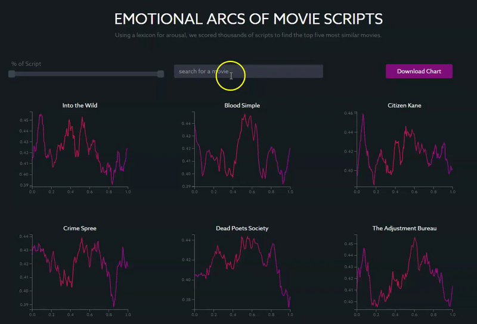

Almost 72 years ago, acclaimed American novelist Kurt Vonnegut came up with a novel method for graphing the plot lines of stories as part of his master’s thesis in anthropology.
Although his work was ultimately rejected by the University of Chicago “because it was so simple and looked like too much fun,” according to Vonnegut, his overlooked contribution has received some renewed attention in the last few years after a group of researchers from the University of Vermont decided to use computational methods to test his hypothesis.
What they came up with were computer-generated story arcs for nearly 2,000 books in English, categorized into one of the six main storytelling arcs outlined in Vonnegut’s original thesis. These include “Rags to Riches” (rise), “Riches to Rags” (fall), “Man in a Hole” (fall then rise), “Icarus” (rise then fall), “Cinderella” (rise then fall then rise) and “Oedipus” (fall then rise then fall).
Their work deviated from Vonnegut’s in that they plotted the emotional trajectory of stories, not just their plot lines. To do so, they slid 10,000-word windows through each text to score the relative happiness of hundreds of points in the story, using a lexicon of 10,000 unique words scored on a nine-point scale of happiness, resulting in the hedonometer tool for sentiment analysis.
Using Arousal as a Proxy Measure for Action
Using a similar lexicon-based approach, I plotted the emotional arcs of more than a thousand movie scripts and used hierarchical clustering to group the most similar scripts.
However, since previous research focuses mostly on positive and negative sentiment, rather than rising and falling action, the following method differs from UVM’s approach in that it uses the NRC Valence, Arousal and Dominance Lexicon, which has scores for 20,000 English words, as a proxy measure for action or conflict in a story. Specifically, I used the arousal dimension to score words on a spectrum from “calm” or “passive” to “excited” or “active.”
The result is a tool that can be used to search for any script already published on the Internet Movie Database to visualize its emotional story arc (for arousal) and find five of the most similar movie scripts in terms of the story’s emotional trajectory, not content.
In a search for the blockbuster “Avatar,” for example, you can see that arousal peaks towards the end of the movie, at around 90% of the length of the script, which corresponds to the point in the movie with the most tension and conflict (the final confrontation between the Na’vi and the humans to determine the fate of the planet).
Other movies with similar structures, with a clear climactic end, include “Beauty and the Beast,” “The Avengers” (2012) and “Ali.”
If you're interested in reading more about the process involved, you can read my blog post here and view all the notebooks and code here.